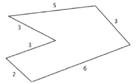
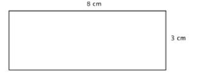
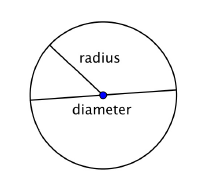
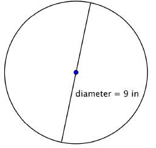

Chapter 3: Measurements & Conversions
Section 3.1: Unit Conversions, Length, & Perimeter
Learning Objective(s)
- Measure objects using both metric and English sides of a ruler.
- Convert numbers between different units.
- Find the perimeter of straight-edge and non-straight-edge objects.
Length
We've all measured something at some point in time in our lives. Most of us have probably used the English system of measurement, which the United States has used for a very long time. However, we are about the only ones who don't use the Metric System.
Without even really knowing it, we've all used a method called dimensional analysis in order to convert some of our English measurements to other English measurements. One example would be if you needed to convert inches into feet. In dimensional analysis we set up proportions using like rates to change our units to what we are looking for. To do this we use something known as a conversion factor. Some of our common English conversion factors are given below:
Length Conversion Factors — English System
| 1 mile (mi) | = | 1,760 yards (yds) |
| 1 mile (mi) | = | 5,280 feet (ft or ′) |
| 1 yard (yd) | = | 3 feet (ft or ′) |
| 1 foot (ft or ′) | = | 12 inches (in or ″) |
Example 1
Your car can drive 300 miles on a tank of gas. How many yards can it drive?
Solution
To start this we need to set up the ratio:
\[\frac{300\text{ miles}}{1\text{ tank of gas}}\]Then the objective is to find the conversion factor that compares miles to yards. According to the table above, 1,760 yards = 1 mile. The way dimensional analysis works is that you want the unit you're trying to get rid of to be opposite of its current position. Since "miles" is currently in the numerator, in our conversion factor it needs to be in the denominator:
\[\frac{300\text{ miles}}{1\text{ tank}} \cdot \frac{1{,}760\text{ yds}}{1\text{ mile}} = \frac{300(1{,}760)\text{ yds}}{1\text{ tank}} = \frac{528{,}000\text{ yds}}{1\text{ tank}}\]Notice that since there was a unit of miles on top and a unit of miles on the bottom, we were able to cancel the common unit. This means that your car can drive 528,000 yards on one tank of gas.
Example 2
A bicycle is traveling at 15 miles per hour. How many feet will it cover in 20 seconds?
Solution
To answer this question, we need to convert 20 seconds into hours, and also convert our miles per hour into feet per hour. We might start by converting the 20 seconds into hours:
\[\frac{20\text{ seconds}}{1} \cdot \frac{1\text{ minute}}{60\text{ seconds}} \cdot \frac{1\text{ hour}}{60\text{ minutes}} = \frac{20}{3{,}600}\text{ hrs} = \frac{1}{180}\text{ hrs}\]Next we need to convert our miles per hour into feet per hour using the conversion factor 5,280 ft = 1 mile:
\[\frac{15\text{ miles}}{1\text{ hr}} \cdot \frac{5{,}280\text{ feet}}{1\text{ mile}} = \frac{79{,}200\text{ feet}}{1\text{ hr}}\]This means that our bicycle travels 79,200 feet in one hour. Lastly we multiply our time by our speed, now that the units match:
\[\frac{1}{180}\text{ hrs} \cdot \frac{79{,}200\text{ feet}}{1\text{ hr}} = \frac{79{,}200}{180}\text{ feet} = 440\text{ feet}\]This means that our bicycle will travel a total of 440 feet in 20 seconds.
The Metric System
For those of us who grew up in the United States, we see no issue with the English system of measurement. However, all over the world everyone else is using a standard unit of measure known as the Metric System. The Metric system works off standard base units, and then each different unit is a multiple or fraction of ten.
Basic Units of Measure
| Prefix | Symbol | Meaning | Relative to Base |
|---|---|---|---|
| kilo- | k | 1,000 units | Bigger than base unit |
| hecto- | h | 100 units | Bigger than base unit |
| deka- | da | 10 units | Bigger than base unit |
| (base) | m, L, g | 1 unit | Base unit |
| deci- | d | \(\frac{1}{10}\) of a unit | Smaller than base unit |
| centi- | c | \(\frac{1}{100}\) of a unit | Smaller than base unit |
| milli- | m | \(\frac{1}{1{,}000}\) of a unit | Smaller than base unit |
For the sake of measuring length, the Metric system uses something known as a Meter (m), which is just slightly longer than one yard. The Metric system works on a base-10 system. If you've ever looked at a ruler on the metric side, you've probably noticed that between the 1 cm and 2 cm mark there are 9 little lines. Each of those lines is known as a millimeter, so 10 mm = 1 cm — which is a much easier conversion than 12 in = 1 ft.
When converting length in the metric system, it is often easiest to simply divide or multiply, as illustrated in Figure 1 below. Think of it as a ladder: as you move up the ladder you divide by 10 for each step, and as you move down the ladder you multiply by 10 for each step.

Example 3
How many meters are in 4.5 km?
Solution
First we have to decide where on the ladder we would be. The "k" means we are at the Kilo level and we want to move down to the base level. To do that we'd move down the ladder 3 steps (Kilo → Hecto → Deka → Base), which means we multiply by \(10^3\):
\[4.5\text{ km} \times 10^3 = 4.5(1{,}000) = 4{,}500\text{ m}\]Example 4
How many meters are in 0.0257 cm?
Solution
Once again we need to determine where on the ladder we'd be. The "c" means centi. In order to move from centi to our base (meters) we'd need to move up the ladder 2 steps (Centi → Deci → Base). Since we're going up, we divide by \(10^2\):
\[\frac{0.0257\text{ cm}}{10^2} = \frac{0.0257}{100} = 0.000257\text{ m}\]Example 5
One snack-size bag of cheese Ritz Bits contains 200 mg of sodium. According to Healthline.com, the average adult should consume at most 2.3 grams per day. What percentage of your daily sodium intake would this serving represent?
Solution
First we need to convert 200 mg into grams. To do that we'd move up the ladder 3 steps (Milli → Centi → Deci → Base), so we divide by \(10^3\):
\[\frac{200\text{ mg}}{10^3} = \frac{200}{1{,}000} = 0.2\text{ g}\]Next we find what percentage of 2.3 g that is. Recall that percentage is \(\dfrac{\text{part}}{\text{whole}} \times 100\%\):
\[\frac{0.2}{2.3} \times 100\% \approx 0.08696 \times 100\% \approx 8.7\%\]This serving represents approximately 8.7% of the recommended daily sodium intake.
Metric–English Conversions
If you've ever noticed, most food packaging lists nutritional facts in metric units. But what if you want to convert between metric measurements and English measurements? In that case we need some additional conversion factors.
Metric–English Conversion Factors
| English to Metric | Metric to English | ||||
|---|---|---|---|---|---|
| 1 mile | = | 1.61 km | 1 km | = | 0.62 miles |
| 1 yard | = | 0.914 meters | 1 meter | = | 3.28 feet |
| 1 foot | = | 0.305 meters | 1 meter | = | 1.09 yards |
| 1 inch | = | 2.54 centimeters | 1 centimeter | = | 0.394 inches |
Note: Depending on which conversion factor you choose, your answers may vary slightly due to rounding in the conversion factors.
Example 6
Your friend in Spain wants to know how far you can throw a football. You go outside and find the distance to be 75 yards. How many meters would that be?
Solution
Looking at our conversion factors, we have two options for converting yards to meters. We will show both so you can see the difference — in practice you would choose one and apply dimensional analysis.
Option 1: Using 1 yd = 0.914 m
\[\frac{75\text{ yards}}{1} \cdot \frac{0.914\text{ m}}{1\text{ yd}} = 68.55\text{ m}\]Option 2: Using 1 m = 1.09 yds
\[\frac{75\text{ yards}}{1} \cdot \frac{1\text{ m}}{1.09\text{ yds}} \approx 68.81\text{ m}\]Remember, since the conversion factors are approximated, that is what creates the small difference in our answers. Either way, we can tell our friend that the throw was just short of 69 meters.
Perimeter
The perimeter of a two-dimensional shape is the distance around the shape. You can think of wrapping a string around a rectangle — the length of that string would be the perimeter of the rectangle. Another way to think of it: some people find it useful to remember "peRIMeter" because the edge of an object is its rim.
If the shape is a polygon (a shape with many straight sides), you can simply add up all the lengths of the sides to find the perimeter. Be careful to make sure that all lengths are measured in the same units. Perimeter is measured in linear units (one-dimensional), such as inches, centimeters, or feet.
Example 7
Find the perimeter of the figure below. All measurements are in inches.

Solution
Since all sides are measured in inches, we simply add the lengths of all six sides:
\[P = 5 + 3 + 6 + 2 + 3 + 3\] \[P = 22\text{ inches}\]Remember to always include units. This means that a tightly wrapped string running the entire distance around the polygon would measure 22 inches long.
Sometimes you need to use what you know about a polygon in order to find the perimeter. Let's look at a rectangle.
Example 8
A rectangle has a length of 8 cm and a width of 3 cm. Find the perimeter.

Solution
Since this is a rectangle, opposite sides have the same lengths — 3 cm and 8 cm. We add up all four sides:
\[P = 3 + 3 + 8 + 8 = 22\text{ cm}\]Notice that the perimeter of a rectangle always involves two pairs of equal-length sides. You could also write this as \(P = 2(3) + 2(8) = 6 + 16 = 22\text{ cm}\). The formula for the perimeter of a rectangle is often written as:
\[P = 2l + 2w\]where \(l\) is the length and \(w\) is the width. The perimeter of this rectangle is 22 cm.
Circumference
Circles are a common shape — wheels on a car, Frisbees, compact discs. A circle is a two-dimensional figure where every point on the edge is the same distance from a fixed center point. The distance from the center to any point on the circle is called the radius.
When two radii (the plural of radius) are combined to form a line segment that passes through the center of the circle from one side to the other, you have a diameter. The diameter is always two times the length of the radius: \(d = 2r\).

The distance around a circle is called the circumference (recall the distance around a polygon is the perimeter). One interesting property about circles is that the ratio of a circle's circumference to its diameter is the same for every circle, no matter the size. The table below illustrates this:
| Item | Circumference (C) (rounded to nearest hundredth) |
Diameter (d) | Ratio \(\dfrac{C}{d}\) |
|---|---|---|---|
| Cup | 253 mm | 79 mm | \(\dfrac{253}{79} \approx 3.2025\ldots\) |
| Quarter | 84 mm | 27 mm | \(\dfrac{84}{27} \approx 3.1111\ldots\) |
| Bowl | 37.25 in | 11.75 in | \(\dfrac{37.25}{11.75} \approx 3.1702\ldots\) |
If you were able to measure more precisely, the ratio \(\dfrac{C}{d}\) would approach 3.14 for each item. The mathematical name for this ratio is \(\pi\) (pi). Pi is a non-terminating, non-repeating decimal — the first 10 digits are 3.141592653. It is often rounded to 3.14 or estimated as the fraction \(\dfrac{22}{7}\). Note that both of these are approximations, used when precision is not critical.
Circumference of a Circle
To find the circumference \(C\) of a circle, use one of the following formulas:
- \(C = \pi d\) (when you know the diameter)
- \(C = 2\pi r\) (when you know the radius)
Example 9
Find the circumference of the circle shown below.

Solution
We are given a diameter of 9 inches, so we use the formula \(C = \pi d\):
\[C = \pi(9)\] \[C \approx 28.27\text{ in}\]Remember to always include units and use \(\approx\) when approximating. Here we rounded to two decimal places.
Example 10
Find the circumference of a circle with a radius of 2.5 yards.
Solution
We are given a radius of 2.5 yards, so we use the formula \(C = 2\pi r\):
\[C = 2\pi(2.5)\] \[C \approx 15.71\text{ yards}\]Remember to always include units.